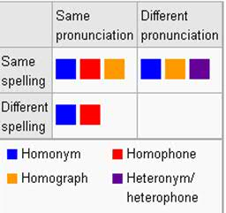

Day 91
Reading
Finish reading And Another Thing... by Eoin Colfer.
Math
On point: All about the decimal!
- Numbers following a decimal point are actually special fractions: Read about decimal fractions on this page.
- Introduction to decimals: video
- Decimals as words: video
- Decimals in words: practice
- Decimals in expanded form: video
- Decimals in expanded form: practice
- Here's a difference you may have already noticed: In European countries (except the UK), a comma is used as a decimal separator. The UK, the US, and Australia use the dot. The style difference dates back to the 18th-century when the dot became popular as a symbol for multiplication. It follows that, in the countries where the comma is used as a decimal separator, the dot is used as a thousands separator.
Words of the Day
Write the two words below in your vocabulary book along with their short definitions. Also, click on the link for each word, and read more about the definition.
- defiance - the act of challenging authority
- deft - skillful in physical movements; especially of the hands
Art
Draw a Silhouette
- Watch the tutorial video.
- The tutorial uses a drawing app to draw the silhouette, but you can do this with pencil and paper, then fill in with marker.
- Note: To avoid using up all your marker, don't make your drawing take up the whole page.
- There are also instructions on wikihow, but their result is not as interesting as the one above.
Day 92
Reading
You'll love this new reading: Me Talk Pretty One Day by David Sedaris.
Reading / Writing
- Read this short story, and answer the questions: The Necklace by Guy de Maupassant.
- Read the following on this page:
- Character Analysis & Summary
- Genre & Themes
- Literary Devices & Vocabulary
- If you'd like, read the rest of the page, but you don't have to answer any of the questions.
- Take this quiz on the story and its analysis:
- Write a short paragraph to answer the following question: What's your verdict on the story's ending? Does it affect you emotionally?
Words of the Day:
Write the two words below in your vocabulary book along with their short definitions. Also, click on the link for each word, and read more about the definition.
- destination - the place designated as the end, as of a race or journey
- diminish - decrease in size, extent, or range
Math
- Writing decimal numbers shown in grids: video
- Write decimal numbers shown in grids: practice
- Graphing tenths from 0 to 1: video
- Identifying tenths on a number line: video
- Decimals on the number line: tenths: practice
Day 93
Reading
Continue reading Me Talk Pretty One Day by David Sedaris.
Words of the Day
Write the three words below in your vocabulary book along with their short definitions. Also, click on the link for each word, and read more about the definition.
- disdain - lack of respect accompanied by a feeling of intense dislike
- dismal - dreary; depressingly bad
Grammar
Homonyms, Homophones, Homographs, and Heteronyms!
- Read about the difference among them on this page.
- Write the following definitions and examples in your notebook:
- Homonyms have the same sound and same OR different spelling: fair (country fair); fair (reasonable)
- Homophones are homonyms that have the same sound and different spelling: pear (fruit); pair (couple)
- Homographs have the same OR different sound and same spelling: lie (untruth); lie (lie down)
- Heteronyms are homographs that have a different sound and same spelling: tear (in the eye); tear (rip)
- Here is a summary:

- Note: Yes, this is confusing, and people do mix these up. In this case (and in many cases involving word meaning), it does help to know Greek: homo = homio (the same); phone = phoh-nee (voice or sound); graph = graph-o (to write); heter = heteros (other). You might not have heard the last one because it's not said as much in Modern Greek.
Math
- Plotting decimal numbers on a number line: video
- Graphing hundredths from 0 to 0.1: video
- Identifying hundredths on a number line: video
- Decimals on the number line: hundredths: practice
History / Social Studies
- Read this summary on the US House of Representatives, and take the ten question quiz.
- Read this summary on the US Senate, and take the ten question quiz.
Day 94
Reading
Continue reading Me Talk Pretty One Day by David Sedaris.
Grammar / Vocabulary
Cite vs. Site vs. Sight: What's the difference?
- These words are homophones (which means they could also be called homonyms).
- Read about the difference on this page.
- Complete this worksheet.
Words of the Day
Write the two words below in your vocabulary book along with their short definitions. Also, click on the link for each word, and read more about the definition.
- dispel - to cause to separate and go in different directions
- eavesdrop - listen without the speaker's knowledge
Writing
Write a long paragraph on the following topic: You have been asked to share a lesson with a group of first-grade students. Using specific details and examples, explain the lesson and why it would be important.
Math
- Review prior topics on decimals: quiz
- Example on rounding decimals to nearest tenth: video
- Round decimals: practice.
- Round decimals using a number line: practice
- Round decimals challenge: practice
Day 95
Reading
Continue reading Me Talk Pretty One Day by David Sedaris.
Words of the Day
Write the three words below in your vocabulary book along with their short definitions. Also, click on the link for each word, and read more about the definition.
- egregious - offensive; standing out in a bad way
- ember - a hot, smoldering fragment of wood left from a fire
Math
- Comparing decimals 2: video
- Comparing decimals 3: video
- Compare decimals (tenths and hundredths): practice
- Comparing 9.97 and 9.798: video
- Comparing decimals 156.378 and 156.348: video
- Compare decimals through thousandths: practice
Science
- Amazing Wonders of the Solar System: video
- In your science book, read Chapter 18: The Solar System and Space Exploration, pp. 184-94.
- Answer the questions on p. 195, and check your answers against those on p. 196.